Anglesey Coastal Path
April/May 2015
Cemaes to Holyhead
| Previous | Next | Intro |
Just past Cemaes, there was an exhibit with stands holding little rocks with descriptions. One was "pebble erratics". On several of the beaches where we walked, there were these rocks under foot. They were beautiful and interesting.
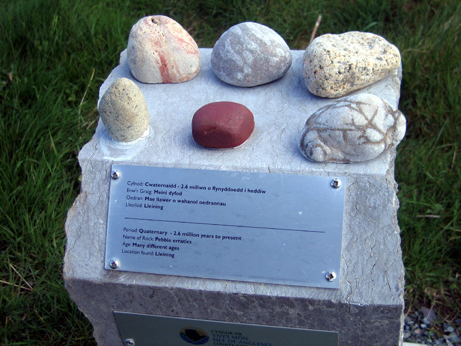
In sight from this exhibit was the Wylfa Nuclear Power Station. It's in sight for many miles, to the disgust of many coast path walkers.
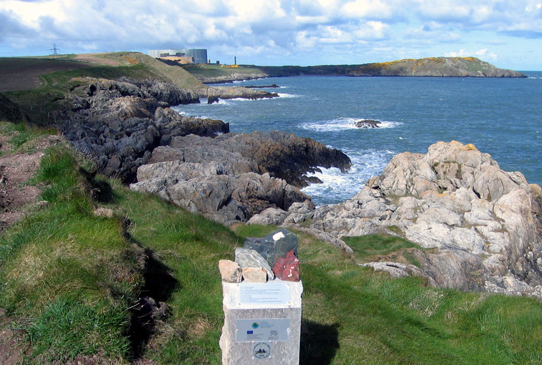
Our route took us out around the headland showing above, then back past the power station. There were pretty coves, before the station...
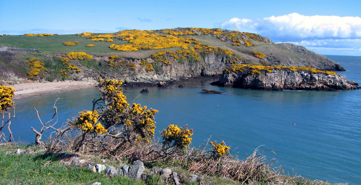
and after:
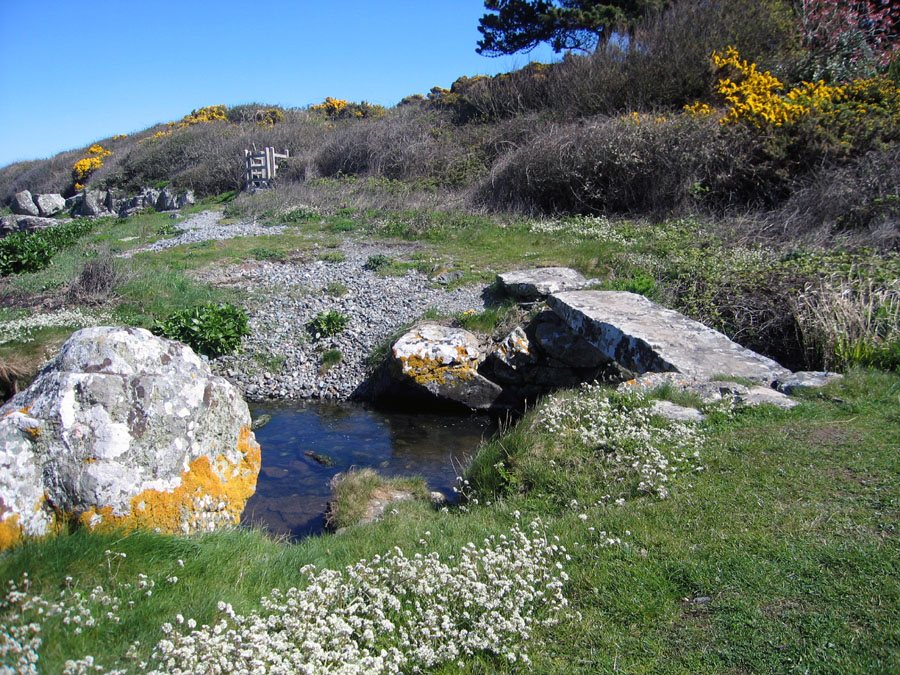
Looking outward from this little bridge, one would see this cove with a pair of greylag geese.
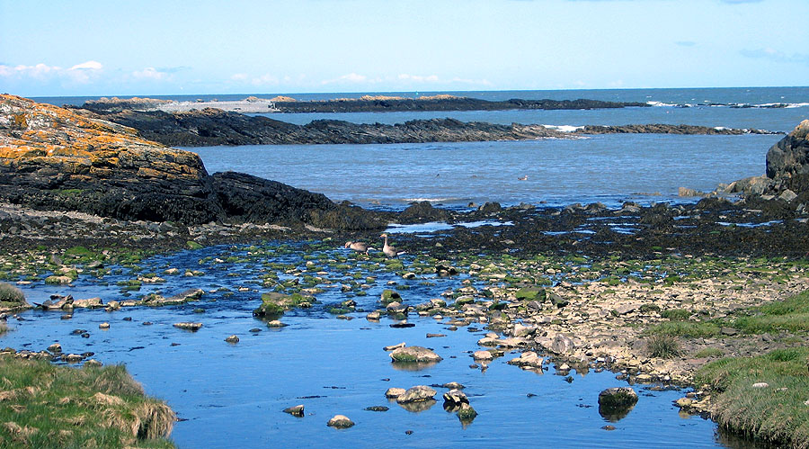
Only a mile further along we came to the interesting Cemlyn Bay. Here the prevalent onshore winds have formed a shingle ridge. Beyond the ridge is a lagoon which has become a wildlife preserve. The lagoon is home to many varieties of birds, many of whom we saw. We walked beside the lagoon until we came to a barrier and a sign advising us how to avoid disturbing nests.
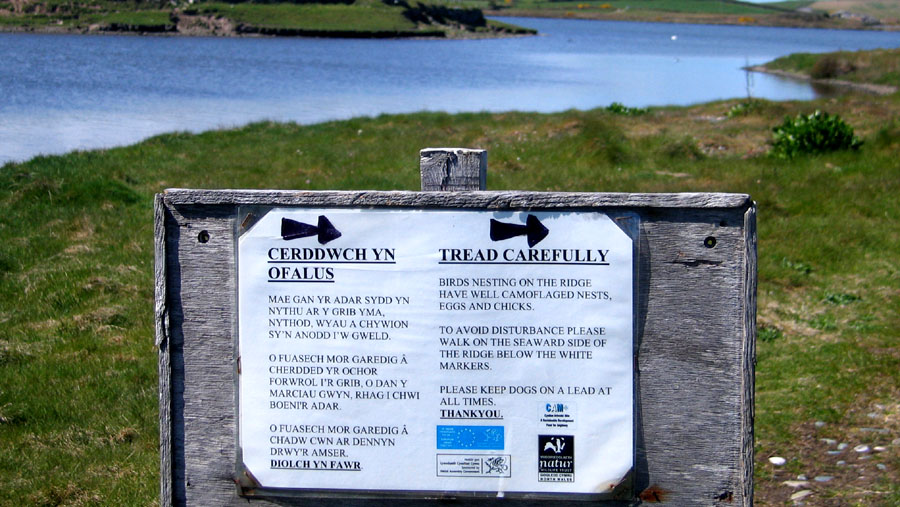
We then walked along the shingle ridge. The little stones underfoot were all rounded and amazingly beautiful. These were like the "pebble erratics" we had just seen in the exhibit near Cemaes. Here's an example:
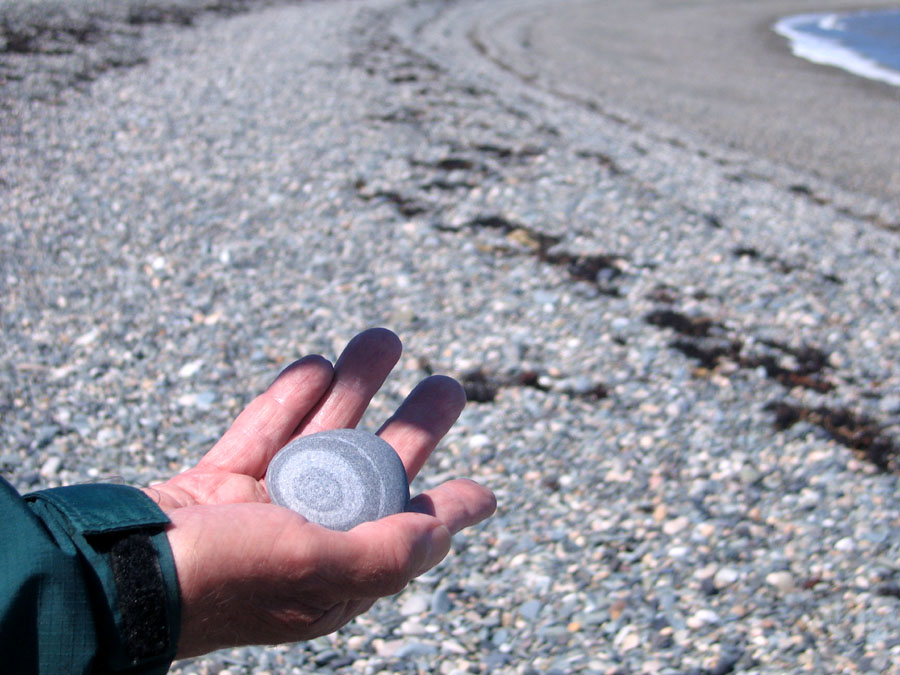
We always like watching lambs. This bunch was having a good time.
| 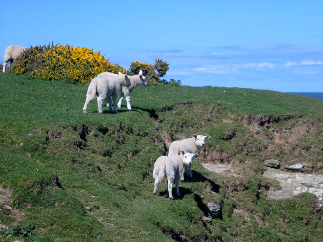 | 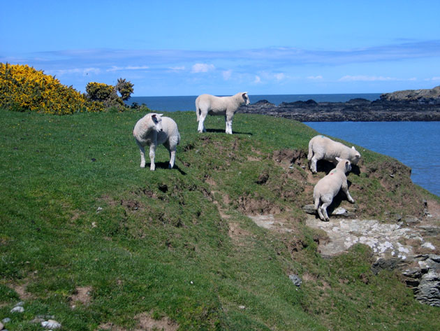 |
| 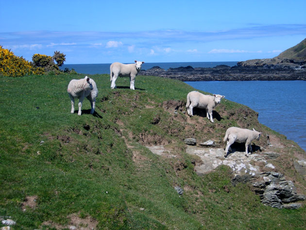 | 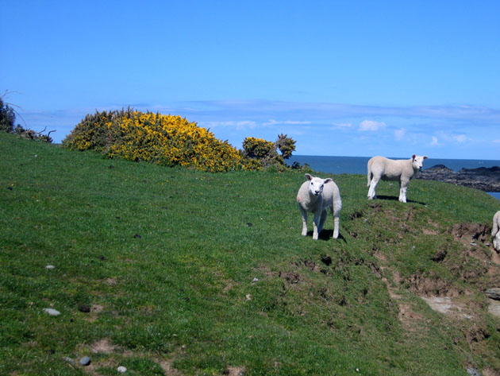 |
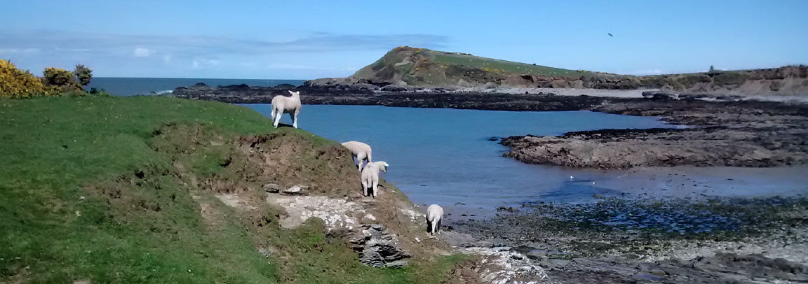
A few miles along, at Carmel Head, the coast reaches a corner and here we turned south. Just before that, there are two big structures called the "White Ladies". These, along with a similar one on an island, were built to aid in navigation around Carmel Head.
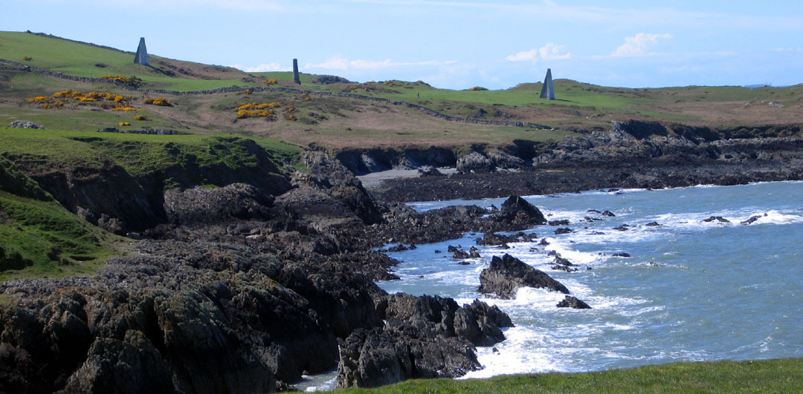
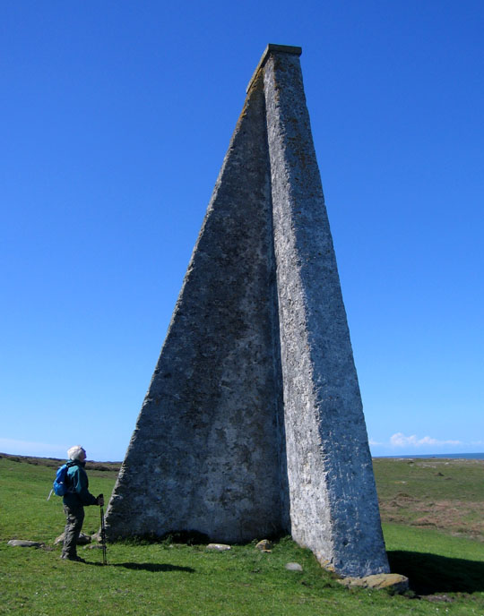
Beyond the White Ladies we came to an electric fence across the path. We had learned not long ago that when a farmer puts an electric wire across a public footpath, there's a requirement that there be a way to unhook it. So we looked, found the big rubber handle, and used it. Here's Thann re-hooking the wire after we had gone through.
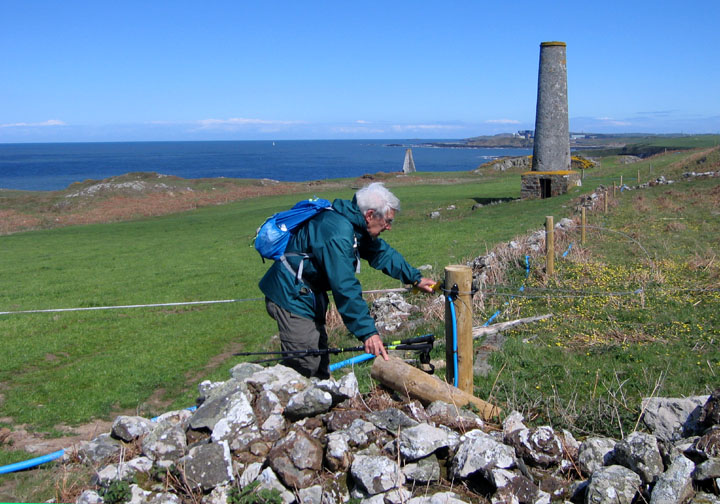
Onward then, around and above inlets.
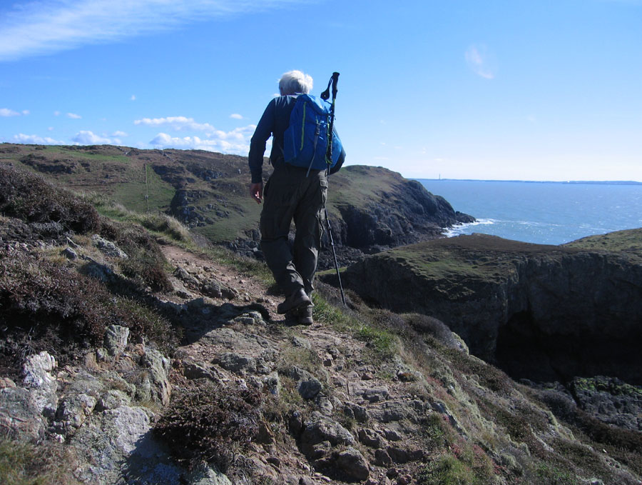
At one of the inlets we saw this sea arch. There are several of these scattered around Anglesey.
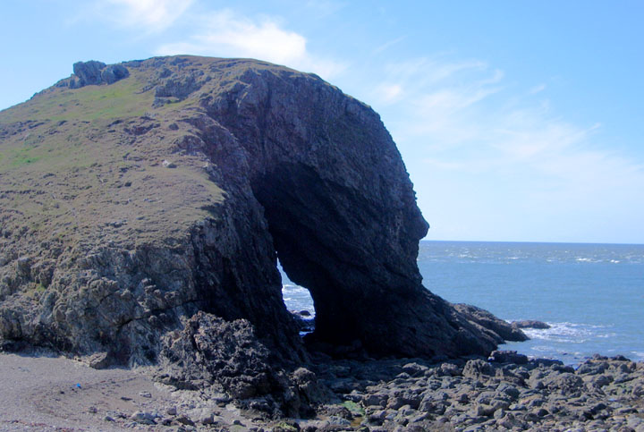
After a while we approached Church Bay, which presented a splendid panorama.
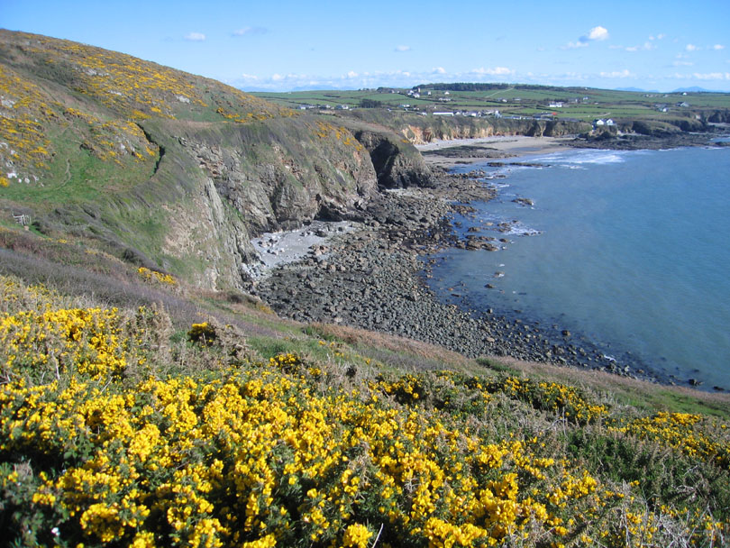
Some miles beyond Church Bay comes the Alaw River, and its wide estuary. Until a few months ago, this was a real problem for coastal path walkers. They had to go several miles inland beside the estuary, but then they came to a major fast highway with no room beside it for walkers. The official advice was to take a bus for several miles. But fortunately for us, a bridge across the Alaw has been built. It took years, and much work getting needed permissions. The result is a beauty:
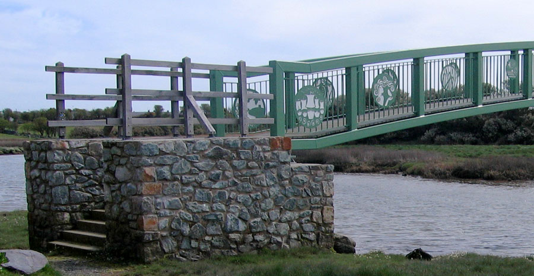
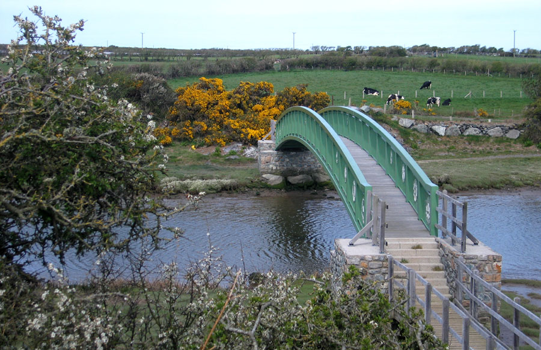
A few miles later we crossed the Stanley Embankment. This is an almost-mile-long structure joining Holy Island to the island of Anglesey. It was designed by Thomas Telford and built in the early 19th century. Later a train line was added. According to Wikipedia, "When this was completed in 1848 a tall dividing wall had to be built between road and rail so the trains did not startle the horses on the road." Nearing Holyhead we entered a park. There was an area with picnic tables as well as a food van, "Pete's Burger Bar". We were freezing, and were overjoyed to find that "Pete" specialized in hot chocolate drinks. We each had a couple of them!
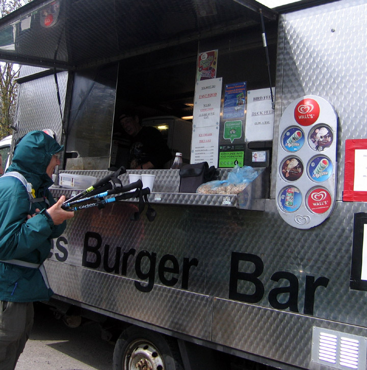
A few hours later we were at St. Cybi's Church, in Holyhead. Holyhead is now known mainly for its function as the main port for ferries to Dublin. It has in fact been a port since Roman times. St. Cybi's Church is inside the walls of a Roman fort, which was built to protect the harbor. In Welsh, Holyhead is Caergybi, the fort of Cybi.
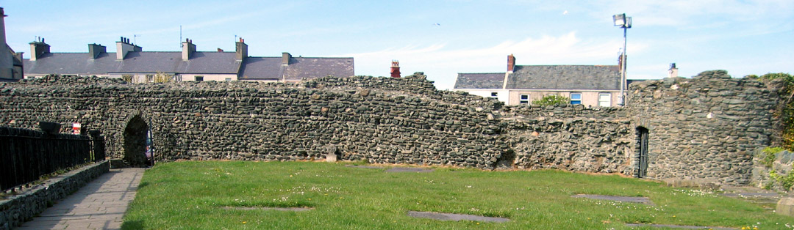
Saint Cybi's Church is the official starting and ending point of the coastal walk.
| 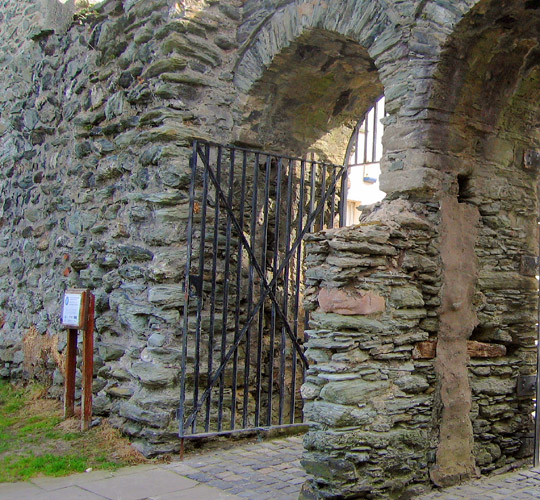 | 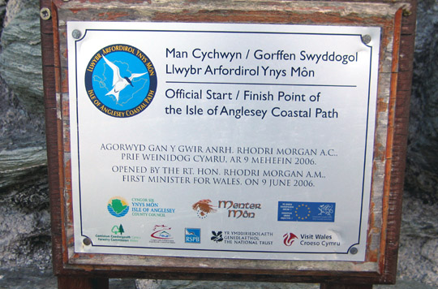 |
| Previous | Next | Intro |